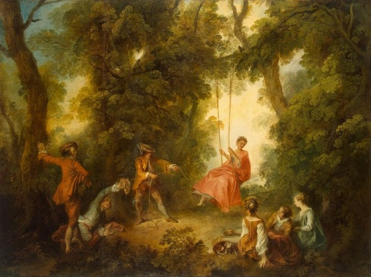

O arcadismo é uma escola literária que surgiu na Europa no século XVIII mais precisamente entre 1756 e 1825, também denominada de Neoclassicismo. O nome "arcadismo" é uma referência à Árcadia, região campestre do Peloponeso, na Grécia antiga, tida como ideal de inspiração poética.
A principal característica desta escola é a exaltação da natureza (bucolismo) e de tudo o que lhe diz respeito. Por essa razão muitos poetas do arcadismo adotaram pseudônimos de pastores gregos ou latinos, técnica denominada de pastoralismo. Caracteriza-se ainda pelo recurso a esquemas rítmicos mais graciosos.
Numa perspectiva mais ampla, expressa a crítica da burguesia aos abusos da nobreza e do clero praticados no Antigo Regime.
Adicionalmente os burgueses cultuam o mito do homem natural em oposição ao homem corrompido pela sociedade.
O século XVIII, também referido como “Século das Luzes”, representa uma fase de importantes transformações no campo da cultura europeia. Na Inglaterra e na França forma-se uma burguesia que passa a dominar economicamente o Estado, através de um intenso comércio ultramarino e da multiplicação de estabelecimentos bancários, assenhoreando-se mesmo de uma parte da atividade agrícola. Paralelamente, a antiga Nobreza arruína-se, e o Clero, com as suas intermináveis polêmicas, traz o descrédito às questões teológicas. Em toda a Europa a influência do pensamento Iluminista burguês se alastra.
Esse período de renovação cultural que se caracteriza, em linhas gerais, pela valorização da Ciência e do espírito racionalista. O método experimental desenvolve-se; a análise crítica dos valores sociais e religiosos aguça-se, provocando polêmicas; há uma grande confiança na capacidade do homem em promover o progresso social (crença em que o bem-estar coletivo só pode advir da razão), e a tendência de libertar o universo cultural da influência da religião acentua-se cada vez mais.